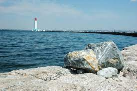
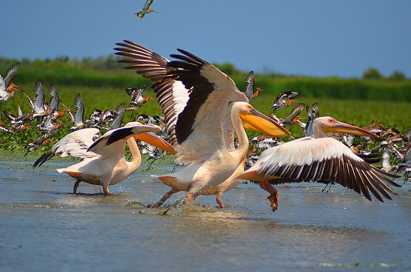
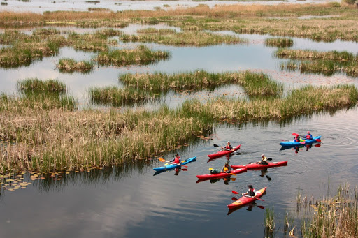
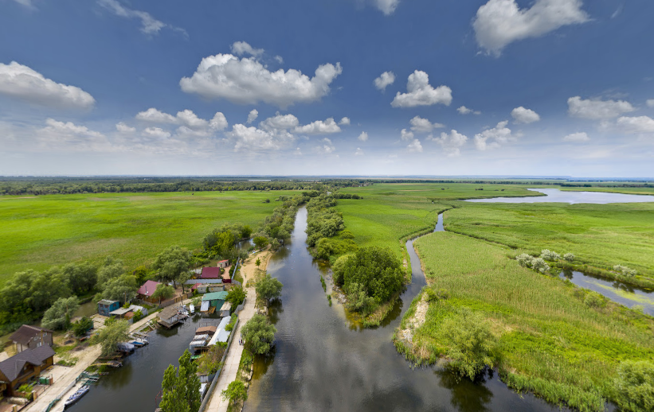
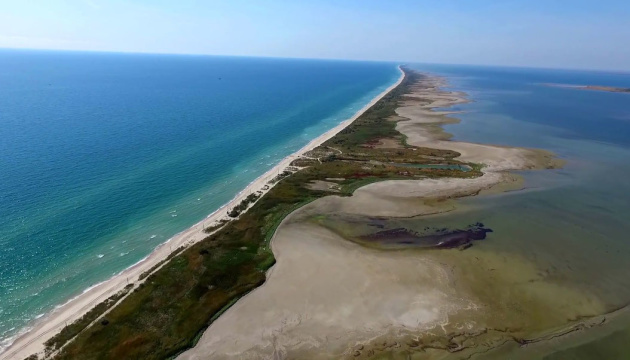
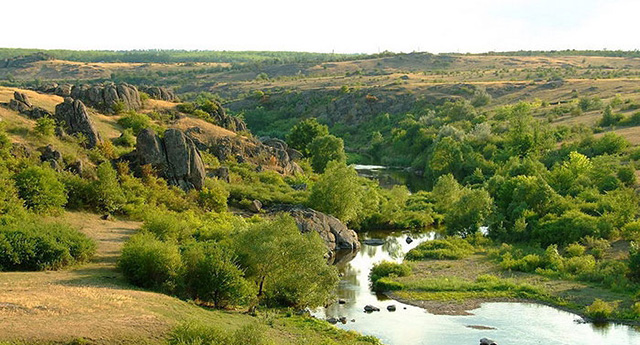

МІСЦЯ В ОДЕСЬКІЙ ОБЛАСТІ, ДЕ МОЖНА ПОБИТИ НАЄДИНІ З ПРИРОДОЮ
Іноді хочеться втекти від міської суєти на природу, відпочити на безлюдному узбережжі, побродити лісом або хоча б виїхати на пікнік за місто.
Дунайський біосферний заповідник

Найвідоміший заповідник на Одещині.
Його ще називають Дунайськими
плавнями.
Це величезна заповідна зона на півдні області, з одного боку,
вона межує з Чорним морем, а з іншого — з Румунією.
Вже протягом 60
років плавні охороняються державою.
Опинившись у такому місці, ви точно відчуєте себе в оточенні дикої
природи. У заповіднику зареєстровано 955 видів вищих рослин, із них 16 –
занесені до Червоної книги. I нехай у цій зоні досить складно зустріти
людину, Дунайські плавні чи не найзаселеніше живністю місце в Європі. Там
водиться 350 видів птахів — майже 70% мешканців України, 107 видів риб та
45 видів ссавців, з яких 19 перебувають у Червоній книзі України.
Варто зважити, що заповідник поділений на певні зони. Опинившись у
буферній зоні, ви можете отримати штраф навіть за зламану гілку. У таких
місцях краще не залишатися на довгий час, особливо з ночівлею.
Ландшафтний парк "Ізмаїльські острови"

У ландшафтний парк "Ізмаїльські острови" входять три досить великі острови
- Малий Татару, Малий Далер i Великий Далер. Вони розташовані в
Кілійському гирлі Дунайської дельти. Їхня загальна площа становить понад 1
300 гектарів.
Дістатись визначної пам'ятки можна тільки по воді, так
що в процесі відпочинку вас швидше потурбують представники тваринного
світу, ніж людина. Будьте обережні на острові Татару - він
використовується в експериментальних цілях як ареал для диких білих
асканійських буйволів. Дунаєм, уздовж островів, часто проводять тури на
каяках.
Природний парк "Нижньодністровський"

Досить молодий природний парк. Його створили лише у 2008 році, але з того
часу він регулярно входить до ТОПів найкрасивіших парків України. На площі
21 тисячі гектарів чимало інших відпочиваючих, особливо на вихідних. Але
все ж таки, якщо заїхати вглиб парку, можна провести час віч-на-віч з
природою.
Територією природного парку прокладено чотири туристичні
маршрути: «Царство птахів», «Дністровська Амазонія», «Старий Турунчук»,
«Блискучий ібіс». Записатися на маршрут можна в офісі парку, що
розташований у Білгород-Дністровському, або за номером телефону.
Природний парк "Тузловські лимани"

Тузловські лимани - це 13 морських лиманів, які протягом 36 кілометрів
відокремлені від моря невеликим пересипом. Це місце стало територією
відпочинку для перелітних птахів та гніздування водоплавних пернатих.
Загалом на лиманах водиться понад 250 видів птахів.
Якщо дуже
пощастить, біля лиманів можна зустріти лісового кота та єнотоподібного
собаку. А біля узбережжя водяться кілька видів чорноморських дельфінів.
Тузловські лимани – досить популярне місце відпочинку. Але їхня довжина
дає можливість вирушити в безлюдні частини природного парку, куди не
доїжджає жоден турист.
Савранский лес

На півночі Одеської області розташовано 20 гектарів незайманого лісу.
Поїздка до цього місця підійде тим, хто втомився від типових одеських
краєвидів.
У лісі розташований старовинний дуб. Він вважається
ровесником гайдамаків, які у 18 столітті ховалися серед дерев під час
селянських повстань. Говорять, що цей дуб може виконати будь-яке бажання.
Також серед мешканців сусідніх сіл ходить багато повір'їв. Вони
розповідають, що у лісі живуть феї, які охороняють дерева від недобрих
намірів людей.